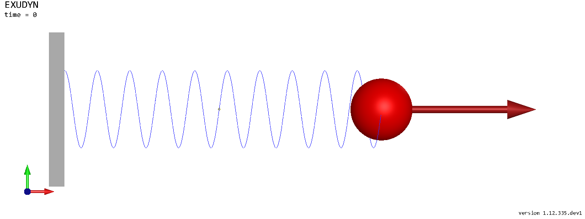
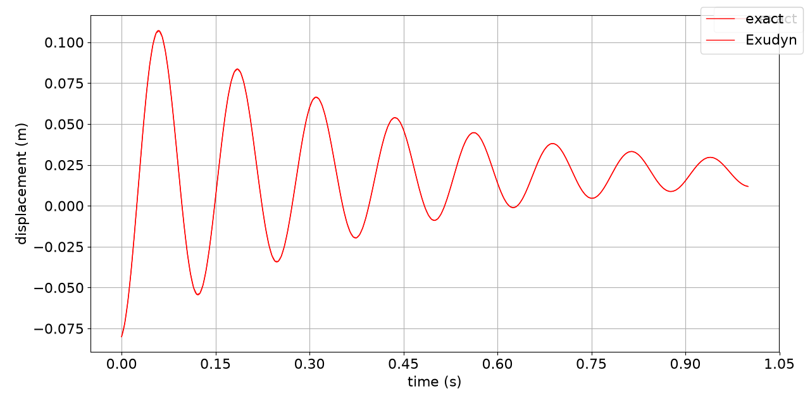
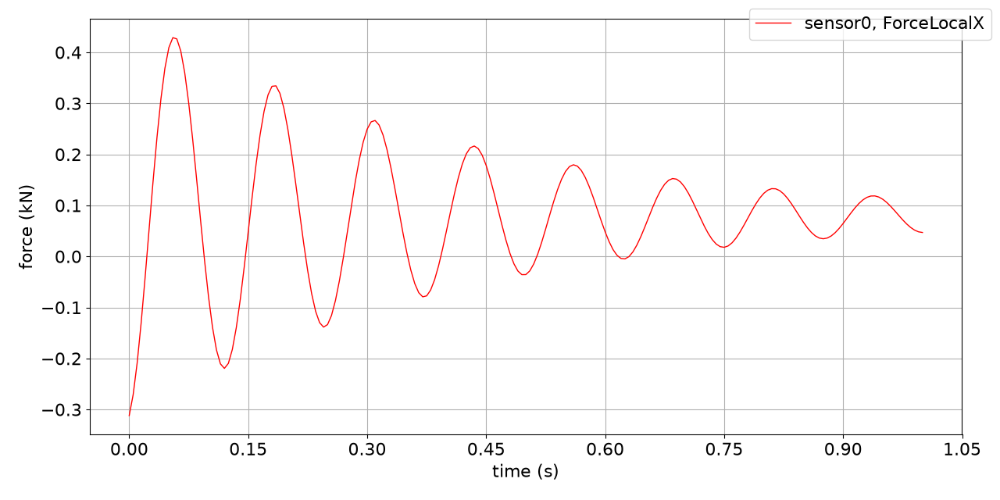

Mass-spring-damper with Create functions
Notebook python/Notebooks/tutorialSpringDamperCreate.ipynb - the same model built from its items is
python/Notebooks/tutorialSpringDamper.ipynb.
A mass point on a spring-damper, pushed by a constant force, solved in time and compared with the exact solution.
Here the mbs.Create... functions add the nodes, objects and markers an item needs at once; the outputs below each
cell are those of the last run.
import exudyn as exu
from exudyn.utilities import SensorBody, SensorObject
from exudyn.interactive import ShowImage
import exudyn.graphics as graphics
import numpy as np
SC = exu.SystemContainer()
mbs = SC.AddSystem()
print('Exudyn version', exu.config.Version())
Exudyn version 1.12.335.dev1
The parameters: mass, stiffness and damping of the spring-damper, the initial displacement and velocity of the mass, and the force on it, which displaces the mass statically by \(x_0 = f/k\).
L = 0.5 #length of the spring, m
mass = 1.6 #kg
spring = 4000 #stiffness of the spring-damper, N/m
damper = 8 #damping, N/(m/s)
u0 = -0.08 #initial displacement, m
v0 = 1 #initial velocity, m/s
f = 80 #force on the mass, N
x0 = f/spring #static displacement
print('eigenfrequency (rad/s) =', np.sqrt(spring/mass))
print('static displacement (m) =', x0)
eigenfrequency (rad/s) = 50.0
static displacement (m) = 0.02
The mass point, the ground, the spring-damper between them, and the force. CreateMassPoint adds a NodePoint and a
MassPoint (and could add gravity), CreateSpringDamper the two markers and an ObjectConnectorSpringDamper,
CreateForce a marker and a LoadForceVector; each returns the index of its object or load.
oMass = mbs.CreateMassPoint(referencePosition=[L,0,0],
initialDisplacement=[u0,0,0],
initialVelocity=[v0,0,0],
mass=mass,
graphicsDataList=[graphics.Sphere(radius=0.04, color=graphics.color.red)])
oGround = mbs.CreateGround(graphicsDataList=[graphics.Brick(centerPoint=[0,0,0], size=[0.02,0.2,0.2],
color=graphics.color.grey)])
#the reference length is the distance of the two points in the reference configuration, L
oSD = mbs.CreateSpringDamper(itemNumbers=[oGround, oMass], stiffness=spring, damping=damper)
lForce = mbs.CreateForce(itemNumber=oMass, loadVector=[f,0,0])
Sensors record the force in the spring-damper and the displacement of the mass at every stored step; with
storeInternal=True they keep the values in memory instead of writing a file.
sForce = mbs.AddSensor(SensorObject(objectNumber=oSD, storeInternal=True,
outputVariableType=exu.OutputVariableType.ForceLocal))
sDisp = mbs.AddSensor(SensorBody(bodyNumber=oMass, storeInternal=True,
outputVariableType=exu.OutputVariableType.Displacement))
mbs.Assemble()
print(mbs)
<systemData:
Number of nodes= 1
Number of objects = 3
Number of markers = 3
Number of loads = 1
Number of sensors = 2
Number of ODE2 coordinates = 3
Number of ODE1 coordinates = 0
Number of AE coordinates = 0
Number of data coordinates = 0
For details see mbs.systemData, mbs.sys and mbs.variables
>
The model as the renderer draws it - in a notebook as an image of the raytracer, without a window. A script would
call SC.renderer.Start() instead and see the motion.
SC.visualizationSettings.connectors.springNumberOfWindings = 10
SC.visualizationSettings.loads.drawSimplified = False
SC.visualizationSettings.general.showSolverInformation = False
image = ShowImage(SC, size=[1280,480])


Solve in time: 1000 steps of 1 ms, with the implicit trapezoidal rule.
tEnd = 1 #end time, s
h = 0.001 #step size, s
simulationSettings = exu.SimulationSettings()
simulationSettings.timeIntegration.numberOfSteps = int(tEnd/h)
simulationSettings.timeIntegration.endTime = tEnd
simulationSettings.solution.file.writePeriod = 5e-3
simulationSettings.solution.sensors.writePeriod = 5e-3
mbs.SolveDynamic(simulationSettings, solverType=exu.DynamicSolverType.TrapezoidalIndex2)
u = mbs.GetObjectOutputBody(oMass, exu.OutputVariableType.Displacement)
print('displacement at t=1 s:', u)
displacement at t=1 s: [0.01183493 0. 0. ]
The exact solution of the damped oscillator,
\(x(t) = e^{-\omega_0 D t}\left(C_1 \cos(\omega t) + C_2 \sin(\omega t)\right) + x_0\)
with \(\omega_0 = \sqrt{k/m}\), \(D = d/(2\sqrt{k m})\) and \(\omega = \omega_0\sqrt{1-D^2}\), and the numerical one
in one plot; PlotSensor takes a sensor or a matrix whose first column is the time.
omega0 = np.sqrt(spring/mass)
D = damper/(2*np.sqrt(spring*mass))
omega = omega0*np.sqrt(1-D**2)
C1 = u0 - x0
C2 = (v0 + omega0*D*C1)/omega
t = np.linspace(0, tEnd, 1001)
exact = np.column_stack((t, np.exp(-omega0*D*t)*(C1*np.cos(omega*t) + C2*np.sin(omega*t)) + x0))
mbs.PlotSensor(sensorNumbers=[exact], components=[0], labels=['exact'], yLabel='displacement (m)', closeAll=True)
mbs.PlotSensor(sensorNumbers=[sDisp], components=[0], labels=['Exudyn'], yLabel='displacement (m)', newFigure=False)


The force in the spring-damper, in kN:
mbs.PlotSensor(sensorNumbers=sForce, components=0, factors=[1e-3], yLabel='force (kN)')


In a script, mbs.SolutionViewer() shows the stored motion forward and backward in the render window.